Практичний досвід · журнал «ДентАрт» 2018 №1
Нормалізація центральної позиції нижньої щелепи у пацієнтів з поєднуваною суглобовою та м'язовою дисфункцією СНЩС за патологічного стирання зубів
NORMALIZATION OF LOWER JAW'S CENTRAL POSITION IN THE CASE WHEN THE PATIENTS HAVE A COMBINED JOINT AND MUSCULAR DYSFUNCTION OF THE TEMPOROMANDIBULAR JOINT WITH PATHOLOGICAL ABRASION OF THE TEETH
Олексій Коритнюк,клініка ПрофіДентГарант (м. Ірпінь, Україна)
Початкова ситуація
У результаті швидкого стирання зубів відбулася зміна протетичної площини, яка первинно компенсувалася м'язовою адаптацією у вигляді вимушеної позиції нижньої щелепи при вільній оклюзії і, особливо явно, при функціональній динамічній оклюзії. З часом м'язова компенсація призвела до суглобової адаптації та розвитку суглобової дисфункції лівого скронево-нижньощелепного суглоба початкового ступеня (фото 1). З наростанням клінічних симптомів межі суглобової адаптації були вичерпані і почався розвиток м'язової дисфункції на доповнення до суглобової, причому суглобова дисфункція стала розвиватися і на правому суглобі нижньої щелепи – як реакція на м'язовий гіпертонус. Таке наростання клінічних симптомів характерне при поєднанні швидкого стирання зубів внаслідок їх низької резистентності до абразії та вираженої неврологічної активності лабільної центральної нервової системи у поєднанні з парафункціями м'язів нижньої щелепи.
М'язова дисфункція посилила патологічне стирання зубів, бо постійний тонус призвів до м'язової гіпертрофії та збільшення навантаження на зуби, особливо на дистальну групу зубів, оскільки нижня щелепа змістилася під дією м'язів у дистальному напрямку і стирання цих зубів стало переважати над стиранням фронтальної групи зубів. У підсумку стирання молярів і премолярів, особливо ліворуч (фото 2), призвело до зниження оклюзійної висоти і до компресії скронево-нижньощелепного суглоба ліворуч, що у поєднанні з підвищеним тонусом гіпертрофованих м'язів призвело до ротації нижньої щелепи у лівобічну сагітально-орієнтовану диспозицію (фото 3).
Підсумуємо: у клініку звернувся пацієнт із суглобовою дисфункцією СНЩС ліворуч середнього ступеня, з порушенням позиції нижньої щелепи і зміщенням її ліворуч і дистально по горизонталі, і все це ускладнене м'язовою гіпертрофією та дисфункцією м'язів нижньої щелепи ліворуч на тлі патологічного субкомпенсованого нерівномірного стирання зубів з акцентом на дистальних зубах ліворуч.
Клінічна ситуація, і так не дуже проста, ускладнювалася тим, що пацієнт, будучи публічним і популярним медіаперсонажем, не міг виділити достатньо часу для лікування суглобової і м'язової дисфункції внутрішньоротовою незнімною апаратурою. Таким чином, можливості корекції були звужені до використання нічних кап та методів реконструкції, які не викликали косметичного дефекту.
Дотримуючись правила «однієї змінної», яке не раз зарекомендувало себе з найліпшого боку, ми могли змінити тільки один параметр за одну клінічну маніпуляцію. Вибір був між зміною протетичної площини, зміною горизонтальної позиції нижньої щелепи, зміною трансверзальної лінії відведення нижньої щелепи, тобто дистальною оклюзійною дистракцією або зміною висоти оклюзії по площині.
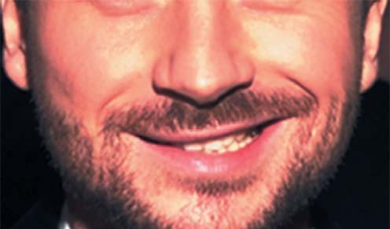
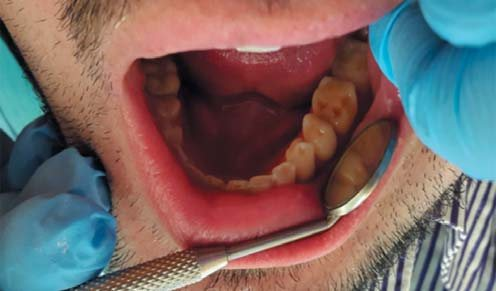
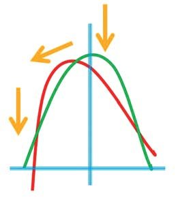
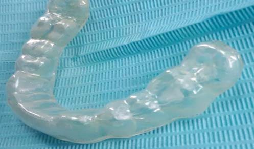
З урахуванням усіх нюансів клінічної ситуації було вирішено виготовити нічну двошарову слайдинг капу на нижню щелепу, без ефекту дистракції СНЩС (фото 4). Таким чином, капа підвищувала висоту прикусу на 1,7 мм, не перерозтягувала м'язи, тобто була нижче висоти спокою і дозволяла м'язам нижньої щелепи скорочуватися у повній амплітуді (фото 5). За рахунок згладжування рельєфу оклюзійної поверхні зубів нижньої щелепи (перевага двошарових кап) (фото 6) і невеликого роз'єднання (менше висоти спокою), бруксуючи вночі і не маючи оклюзійних перешкод, пацієнт своїми ж м'язами ставив нижню щелепу в ідеальну для нової висоти оклюзії позицію – за рахунок білатеральної симетрії м'язів і за рахунок ковзкого та твердого верхнього шару капи без рельєфу.
Крім того, завдяки рівномірній товщині усієї капи і, відповідно, превентивному контакту в дистальних ділянках, невеликий ефект дистракції СНЩС (розтягнення з елементом нормалізації положення суглобової головки) таки мав місце, що позитивно вплинуло на гідратацію суглобового диска, особливо ліворуч, зменшивши напруженість у суглобі і частково згладивши симптоматику дисфункції.
Через 21 день, точніше ніч, користуванню капою зроблено її корекцію шляхом сточування частини жорсткого шару капи праворуч для нормалізації протетичної площини і введення її в паралель із суглобовою трансверзаллю (фото 7, 8).
Через 11 діб, коли нижня щелепа вже засвоїла нове положення, знову зроблено корекцію протетичної площини на капі праворуч, аж до зрізання повністю жорсткої пластини капи (фото 9).
Через 11 діб було підвищено тимчасову висоту прикусу на капі шляхом нашарування на капу ще одного шару із жорсткої пластини. Таким чином капа ліворуч отримала товщину в зоні молярів 2,4 мм, а праворуч – 1,7 мм з плавною зміною товщини між боками для нормалізації першого (трансверзаль) параметру позиції протетичної площини та початкової транспозиції нижньої щелепи у центральне співвідношення (фото 10).
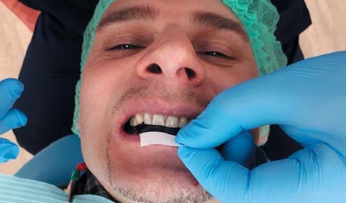
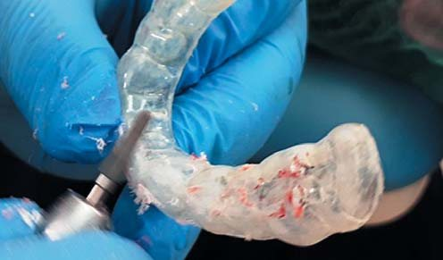
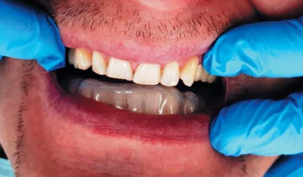
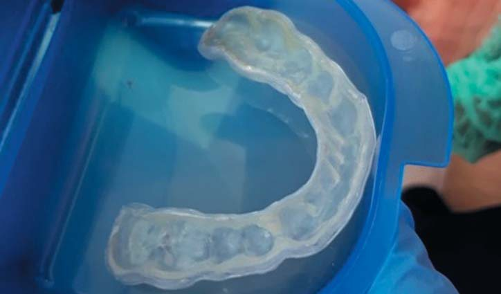
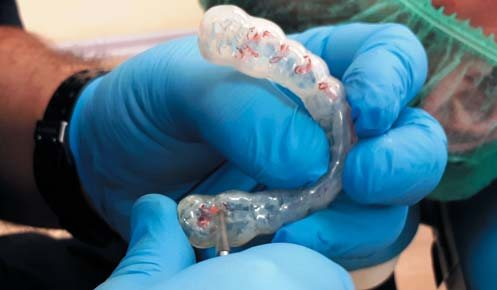
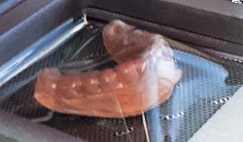
Коли пацієнт освоїв і це положення нижньої щелепи (11 ночей носіння капи), знову робили корекцію капи для нормалізації протетичної площини змикання. Будь-яка корекція супроводжувалась депрограмуванням м'язів нижньої щелепи і контролем на артикуляційному папері зон контакту капи із зубами (фото 11).
Таким чином за допомогою знімної внутріротової апаратури у вигляді нічних кап було досягнуте ідеальне положення нижньої щелепи як по вертикалі – висота прикусу, так і по горизонталі – позиція нижньої щелепи відносно черепа (фото 12).
Позиціонування робили під контролем маркованих діагностичних моделей у фізичному і віртуальному артикуляторах, під контролем рентгенографії СНЩС та їх комп'ютерної томографії, у відповідності з індивідуальною анатомією та фізіологією жувального апарату саме цього пацієнта, а не за розрахунком середніх величин. Після чого вирішено було реконструювати зубний ряд роботою класу total side (однощелепна реконструкція).
Було обрано метод зміцнених композитних непрямих реконструкцій у вигляді накладок та вінірів. Ця методика дозволяє оклюзійно реабілітувати пацієнта, не застосовуючи інвазивних методів лікування, які вимагають препарування опорних зубів, які і так уже постраждали від стирання. Отримано відтиски щелеп, відлито робочі та дубльовані (для фінальної посадки робіт) гіпсові моделі. Потім моделі були загіпсовані в положенні, яке ми отримали на капі, тобто капа використовувалася як прикусний валик (позиціонер) при підгіпсуванні моделі нижньої щелепи.
Непрямі композитні реставрації, призначені замінити втрачені тверді тканини зубів, моделювалися, виходячи з принципів біоеквівалентного заміщення, для імітації дентину використовувався більш еластичний гібридний матеріал Jen-Radiance Molar (фото 13), а для імітації емалі – жорсткіший і стійкіший до стирання мікрофільний композит Jen-Radiance А3-Е. При моделюванні для ліпшої адаптації накладки до гіпсу використовувався текучий композит Jen LC-Flow (фото 14), при цьому він виконував і роль амортизатора для згладжування майбутньої абфракції в зоні переходу накладки на зуб і запобігання сколам композиту (фото 15).
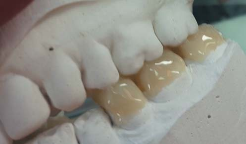
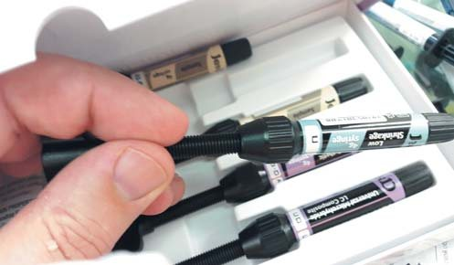
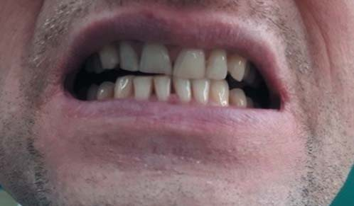
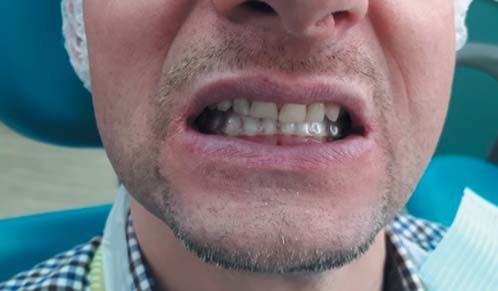
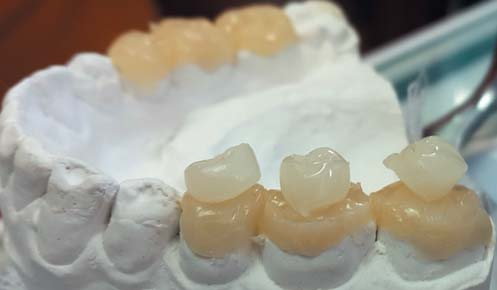
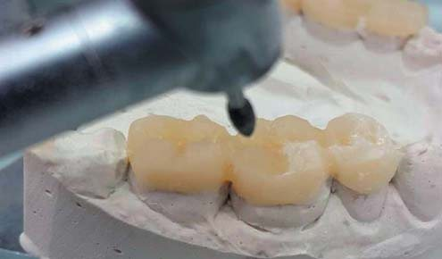
Після фінальної обробки реставрацій вони були відполіровані (фото 16), відокремлені від моделі і долімеризовані до максимального ступеня конверсії мономеру під тиском 3 атмосфери у середовищі гарячої, 132° Цельсія, водяної пари у медичному автоклаві протягом 20 хвилин (фото 17).
Після перевірки роботи на дубльованій моделі та фінальної обробки накладки зафіксували на опорних зубах методом швидкої адгезивної фіксації (фото 18), і після перевірки статичної оклюзії були отримані відтиски для виготовлення вінірів на фронтальні зуби. Динамічні екскурсії і функціональну оклюзію не адаптовували для досягнення стабілізації зв'язкового апарату СНЩС, раніше розтягнутого при їх дистракції капами і, як наслідок, надмірної артикуляційної свободи суглобів.
Крім того, оскільки на зубах верхньої щелепи установлені керамічні реконструкції (попередньо відкориговані до відповідності анатомічним орієнтирам протетичної площини) (фото 19), вони у процесі функціонування індивідуалізують компенсаційні криві сагітального, трансверзального та кутових ведень нижньої щелепи, усуваючи блокування та гіпербалансуючі контакти на композитних накладках.
Відлито моделі і виготовлено композитні вініри за викладеною вище методикою, після чого зроблено їх адгезивну фіксацію на опорні зуби (фото 20, 21).
Фінальним етапом стало виготовлення оклюзійних накладок на зуби 34 і 44 як замикаючі контакти між фронтальними і дистальними зубами нижньої щелепи (фото 22, 23).
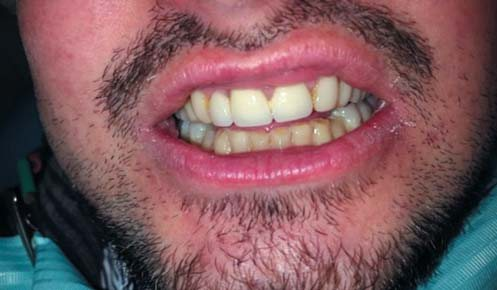
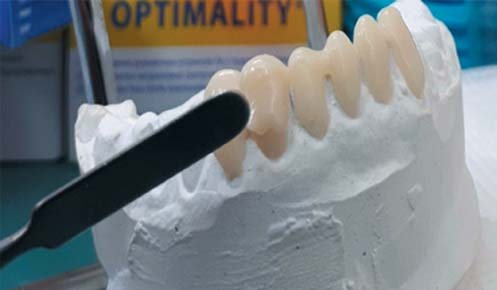
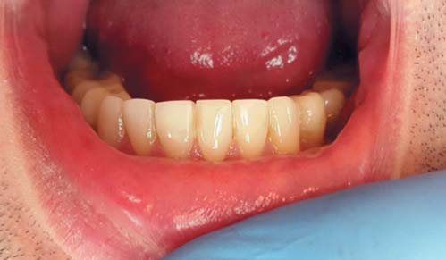
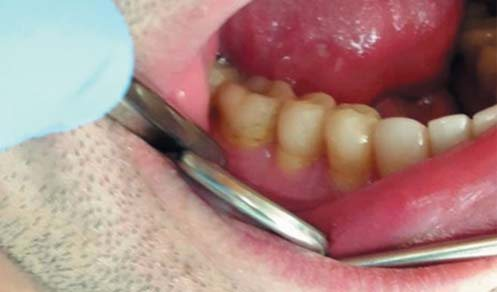
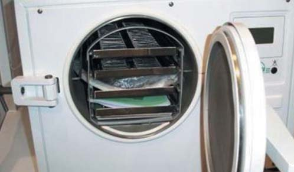
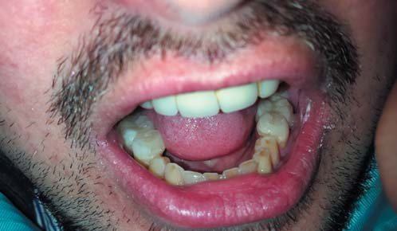
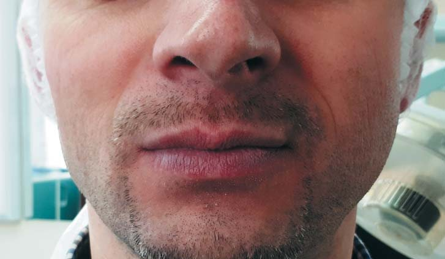
Висновки
Таким чином, завдяки використанню методу непрямих композитних реставрацій ми зафіксували оптимальне розташування нижньої щелепи в анатомічному та фізіологічному плані, уникнувши препарування зубів і не турбуючись про сколи накладок, які дуже легко лагодяться прямим методом, як будь-яка композиційна реставрація. При цьому термообробка композиту чудово підвищує виживання реставрацій за найбільш несприятливих клінічних ситуацій.
Фактично в результаті цього клінічного етапу ми перевели знімну багатошарову капу зі слайдинг-ефектом і з невеликою дистальною дистракцією у незнімну композитну «капу»-позиціонер (без ефекту ковзання). Перевага цього методу – самоадаптованість композитних непрямих реставрацій до динамічних оклюзійних контактів за рахунок стирання їх об керамічні реставрації на зубах верхньої щелепи.
Маючи достатній оклюзійний захист в екскурсіях нижньої щелепи, за рахунок рельєфу горбиків і ріжучих країв накладок та вінірів ми прагнемо не лише до стабілізації СНЩС, але й до м'язової атрофії для зниження вираженості дисфункції м'язів нижньої щелепи.
У подальшому планується заміна керамічних конструкцій на верхній щелепі і, через адаптивні капи, заміна композитних непрямих реконструкцій на зубах нижньої щелепи для стабілізації положення нижньої щелепи у центральному положенні.
Література
- Кляйнрок М. Функциональные нарушения двигательной части жевательного аппарата. – Л.: ГалДент, 2015. – С. 23-25, 162-165.
- Славичек Р. Жевательный орган. – М.: Азбука, 2008. – С. 17-21, 68-73.
- Хватова В.А. Клиническая гнатология. – М.: Медицина, 2005. – С. 18-29.
- Шарова Т.В., Рогожников Г.И., Сидоренко И.В. Факторы нарушения окклюзии и методы ее нормализации. – Пермь: Кн. изд-во, 1990. – С. 70-73.
- Доусон П.Е. Функциональная окклюзия: от височно-нижнечелюстного сустава до планирования улыбки. – М.: Практическая медицина, 2016. – С. 27-29, 39-44, 157-170.